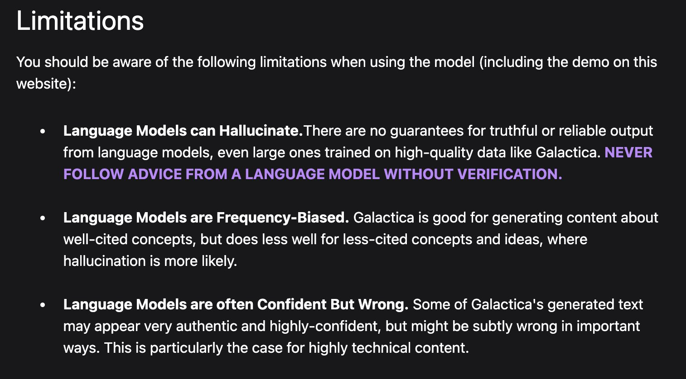

The Week Ahead
A few ‘fun’ facts about your professor…
Useful Information
All of the content will remain available to you after our workshop:
- The main micro-site: jreades.github.io/jaipur/ – talks, applied sessions, and some suggested readings.
- A quick introduction to Python: jreades.github.io/code-camp/ – 12 self-paced sessions focussing on the basics of Python.
There are plenty of other resources online (Khan Academy, MIT Open Courseware, etc, etc) if you want to go further. And, of course, our Urban Spatial Science MSc and Connected Environments MSc.
What Are We Trying to Do?
This workshop hopes to achieve four things:
- To expose you to the power of spatial analysis in Python.
- To expose you to a set of tools that support reproducible analysis.
- To (hopefully) convince you that going further with this is worth your time.
- To signpost resources that will support further learning.
This knowledge is intended to be transferrable.
Principles
- Software should be free (as far as practicable).
- Software should be open (as far as practicable).
- Software should run on all platforms (you get the idea).
- Software should reflect what you will encounter in the ‘real world’.
Overall Structure
- Day 1: Getting Started: introducing open source, code and data.
- Day 2: Preparing: setting up, managing, and linking data.
- Day 3: Reproducing: making outputs and analysis reproducible.
- Day 4: Reinforcing: making maps and visualisations.
The Challenges
- To learn a bit of programming and to connect it to the bigger picture.
- To be ok with learning to walk before you run.
- To learn not to rely (too much) on ChatGPT.
- To communicate your thoughts through code and text.
The Rewards
- Skills that are highly transferrable and highly sought-after professionally.
- Problem-solving and practical skills that are valued by the private and public sectors.
- A whole new way of seeing the world and interacting with it.
- Lots of support along the way… if you remember to ask for it!
Getting Help
Hint: There’s lots of help ‘out there’.
Study Aids
When you need an answer right now:
When you want to learn more:
Before You Ask for Help
From the Computer Science Wiki:
- Draw a picture of the problem
- Explain the problem to a toy or inanimate object (really!)
- Forget about a computer; how would you solve this with a pencil and paper?
- Talk it through out loud
- Explain the problem to a friend
To which we would add:
- Use
print(variable)statements liberally in your code!
When to Ask for Help
- When you get warning messages from your computer’s Operating System.
- When you cannot get the coding environment to run at all.
- When even simple commands return line after line of error code.
- When you have no clue what is going on or why.
- When you have been wrestling with a coding question for more than 20 minutes (but see: How to Ask for Help!)
How to Ask for Help
In addition to what we have provided, we like the “How to ask programming questions” page provided by ProPublica:
- Do some research first.
- Be specific.
- Repeat.
- Document and share.
If you find yourself wanting to ask a question on Stack Exchange then they also have a guide, and there are plenty of checklists.
A Final Note: LLMs
We can’t pretend they don’t exist.
Why Use Them?
Many programmers use LLMs as part of their coding for three reasons:
- They can help to spot bugs, redundancy, and other issues that impact the performance of large applications (i.e. feedback).
- They can provide information about different libraries and strategies the developer can use, as well as completing code begun by the developer (i.e. guidance or training).
- They can help to ‘translate’ code and design patterns between languages (i.e. re-use).
This is very much a ‘brave new world’ and we are all trying to figure it out on the fly.
How to Use THem
LLMs like ChatGPT can help you to learn to be a better coder by providing guidance and feedback:
- Use AI like a patient, but scatty tutor.
- Ask it to explain. Then ask it again.
- Always test its suggestions against reality and logic.
LLMs as co-authors
Using ChatGPT as your co-pilot is not the same as using ChatGPT as your co-author.
How (Not) to Use Them
Here’s what we’ve noticed so far:
- Don’t delegate learning to the LLM, it doesn’t work.
- Don’t let it write paragraphs for you because LLMs like flowery language (e.g. ‘intricate methodologies’, ‘exhaustive reviews’, …).
- Don’t expect LLMs to come up with an argument for you because they strugle with structure/coherence.
- Don’t expect LLMs to get the details right (they don’t ‘like’ referencing!).
Read the Fine Print

Own Your Mistakes

So… Study like you’re learning a new language. Recognise you are all starting at different levels. Talk to other students. Ask for help when you need it!1
One More Thing…
- You will get things wrong.
- We will get things wrong.
- We will assume that you are trying your best.
- Please assume the same about us!
- It’s going to be messy, but we’re really excited about it!
References

The Week Ahead